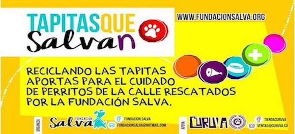
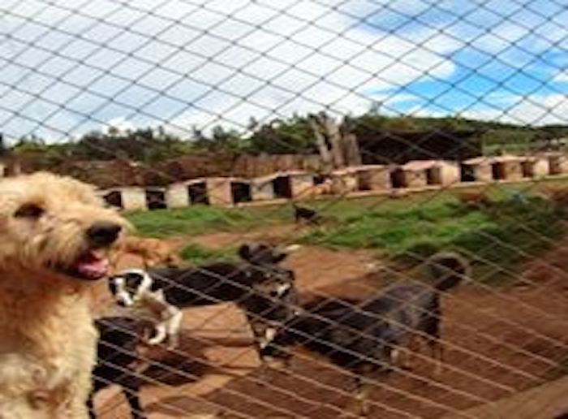
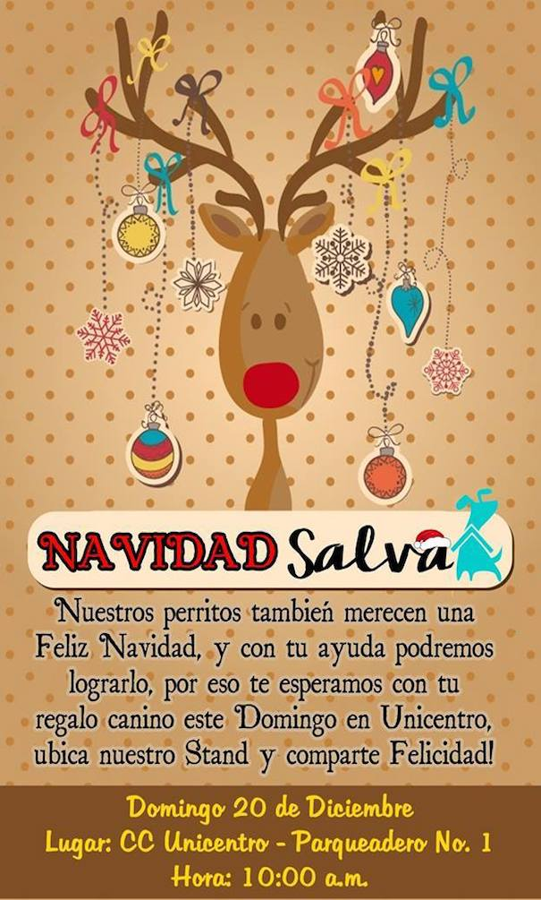
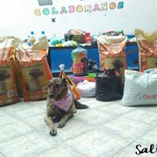
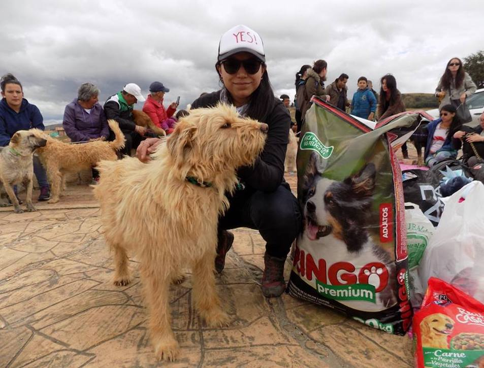

APADRINA UNA ESTERILIZACIÓN
El objetivo de este programa es apadrinar a perras y gatas de barrios de estratos bajos para que no tengan cachorros y de esta forma detener el aumento de la población callejera de la ciudad.
APADRINA UN ANGEL
El objetivo de este programa es apadrinar un animal ya sea un perro o gato en estado de abandono que ha sido rescatado por parte de la fundación. Este va a recibir atención veterinaria, tratamiento médico y/o quirúrgico, alimento, albergue, además de brindarle todos los cuidados que necesite.
"El hombre puede medir el valor de su propia alma en la mirada agradecida que le dirija un animal al cual ha socorrido." -Platón





